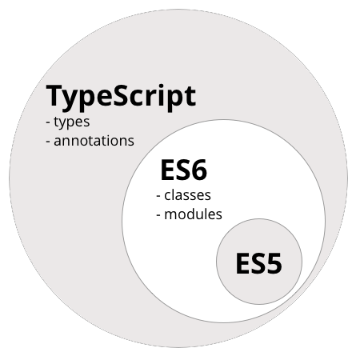

So, what is it?
“ TypeScript is a typed superset of JavaScript that compiles to plain JavaScript. Any browser. Any host. Any OS. Open Source. ”
Some history...
Anders Hejlsberg, lead architect of C# and creator of Delphi and Turbo Pascal - creator of TypeScript.
TypeScript was first made public in October 2012 (at version 0.8), after two years of internal development at Microsoft.
This version supports the development only in Visual Studio, which is not available on Linux and OS X.
WHY TYPESCRIPT?
Main JS flaws:
- Lack of modularity
- Sometimes strange behaviour
- Dynamic typing
TypeScript - typed Javascript?
TS vs JS (wat cases)
| Example | JS | TS |
|---|---|---|
[ ] + [ ] |
"" |
Error |
{ } + { } |
NaN |
Error |
[ ] + { } |
" [object Object] " |
Error |
{ } + [ ] |
0 |
Error |
"hello" - 1 |
NaN |
Error |
Main goals
- Provide an optional type system for JS
- Provide planned features from future JS editions to current JS engines
ES6 vs TS
Features
- Simple class-based OOP with inheritance
- Access modifiers for all classes
- Type setting for variables, parameters and return values
- Incredible error detection which ties into static typing
- Code hints for autocomplete and the return type of a function
- The keyword this can be set to operate within the current class or method
- Defined separation between let and var
Getting started
-
Install via npm:
npm install -g typescript -
By installing TS's Visual Studio plugins
Top 10 things about TS
1. Data types
// Boolean
let isDone: boolean = false;
// Number
let dec: number = 6;
let hex: number = 0xf00d;
let bin: number = 0b1010;
let oct: number = 0o744;
// String
let color: string = "blue";
// Array
let list: number[] = [1, 2, 3];
let list: Array<number> = [1, 2, 3];
//Declare a tuple type
let x: [string, number];
x = ["hello", 10]; // OK
x = [10, "hello"]; // Error
// Enum
enum Color {Red, Green, Blue};
let c: Color = Color.Green;
// Any
let notSure: any = 4;
notSure = "maybe a string instead";
notSure = false; // okay, definitely a boolean
// Void
function warnUser(): void {
alert("This is my warning message");
}
// Null and Undefined
let u: undefined = undefined;
let n: null = null;
// Never
function error(message: string): never {
throw new Error(message);
}
2. Variable declaration
var
|
let
|
const
|
|---|---|---|
| can be reassigned and use anywhere in the function | can be reassigned but only in the blocks it is defined in | won’t be reassigne |


3. Classes
class Customer {
let customerId: number;
let companyName: string;
addCustomer() {
//some code here
}
removeCustomer() {
//some code here
}
updateCustomer() {
//some code here
}
getCustomer() {
//some code here
}
}
var obj = new Customer();
obj.customerId = 100;
obj.companyName = "Some Company";
obj.addCustomer();
4. Access Modifiers and Properties
TypeScript has four access modifiers - public, private, protected and readonly.
class Animal {
private name: string;
constructor(theName: string) {
this.name = theName;
}
}
new Animal("Cat").name; // Error: 'name' is private;
class Octopus {
readonly name: string;
readonly numberOfLegs: number = 8;
constructor (theName: string) {
this.name = theName;
}
}
let man = new Octopus("Man with the 8 strong legs");
man.name = "Man with the 3-piece suit"; // error! name is readonly.
5. Static properties
TypeScript classes support static properties that are shared by all instances of the class.
class Something {
static instances = 0;
constructor() {
Something.instances++;
}
}
var s1 = new Something();
var s2 = new Something();
console.log(Something.instances); // 2
6. Function Overloading
You can invoke different implementations of a function depending on the parameter.
addCustomer(custId: number);
addCustomer(company: string);
addCustomer(value: any) {
if (value && typeof value == "number") {
alert("First overload - " + value);
}
if (value && typeof value == "string") {
alert("Second overload - " + value);
}
}
7. Constructors
Stop manually assigning constructor parameters.
constructor(custId: number, company: string, country: string)
{
this.customerId = custId;
this.companyName = company;
this.country = country;
}
constructor(public customerId: number, public companyName: string,
public country: string) {
}
8. Inheritance
class Animal {
name: string;
constructor(theName: string) { this.name = theName; }
move(distanceInMeters: number = 0) {
console.log(`${this.name} moved ${distanceInMeters}m.`);
}
}
class Snake extends Animal {
constructor(name: string) { super(name); }
move(distanceInMeters = 5) {
console.log("Slithering...");
super.move(distanceInMeters);
}
}
let sam = new Snake("Sammy the Python");
sam.move();
9. Interfaces
Interfaces are used in TypeScript to define the structure of objects (and only objects).
interface Person {
firstname: string;
lastname: string;
}
10. Modules
A module is a container for your code that helps you organize your code in a neat way.
module Company {
class Employee {}
class EmployeeHelper {
targetEmployee: Employee;
}
export class Customer {}
}
var obj = new Company.Customer();
When it makes sense to use
- When you have a large codebase
- When your team’s developers are already accustom to statically-typed languages
- TypeScript can serve as a replacement for Babel
- When you really feel the need for speed
Dynamic popularity
“Microsoft's TypeScript may be the best of the many JavaScript front ends. It seems to generate the most attractive code. And I think it should take pressure off of the ECMAScript Standard for new features like type declarations and classes.”